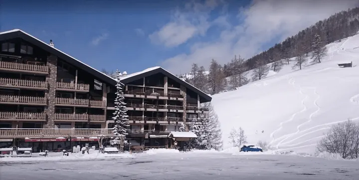
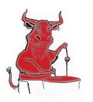
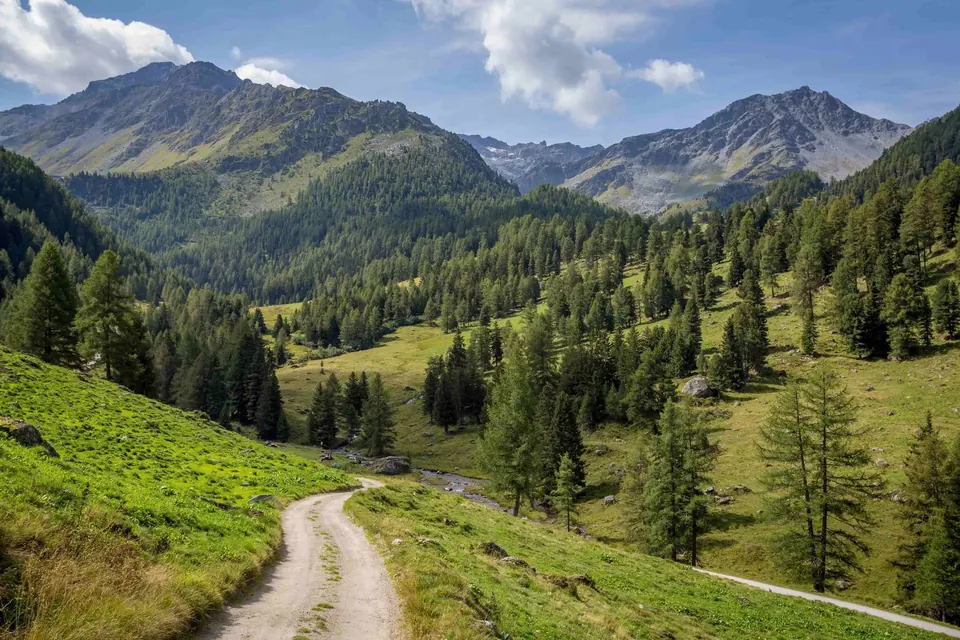
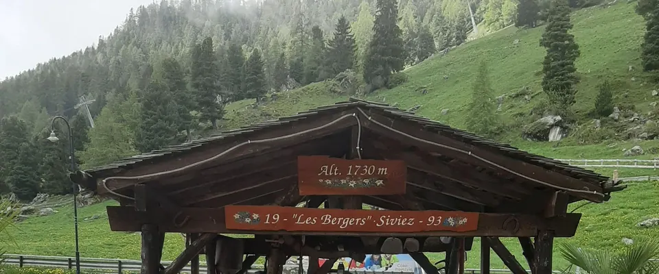
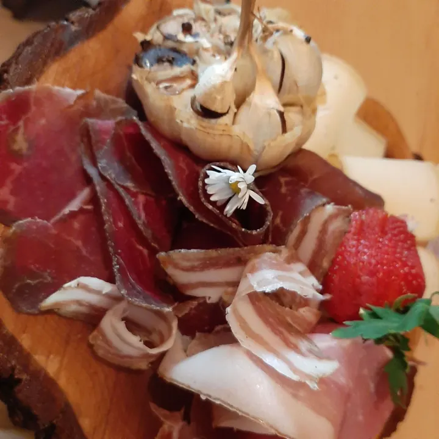
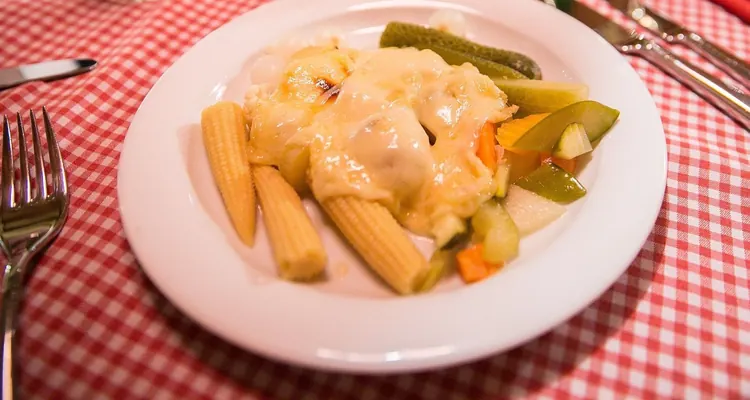
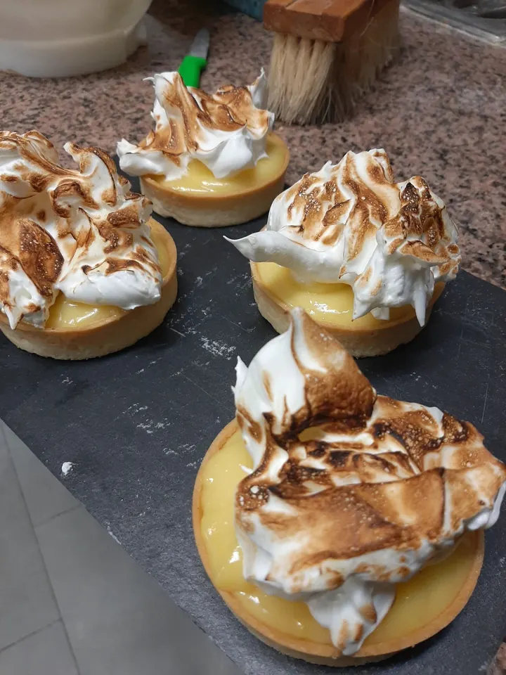
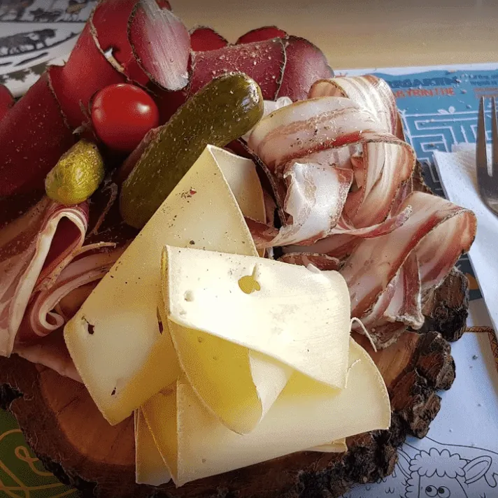
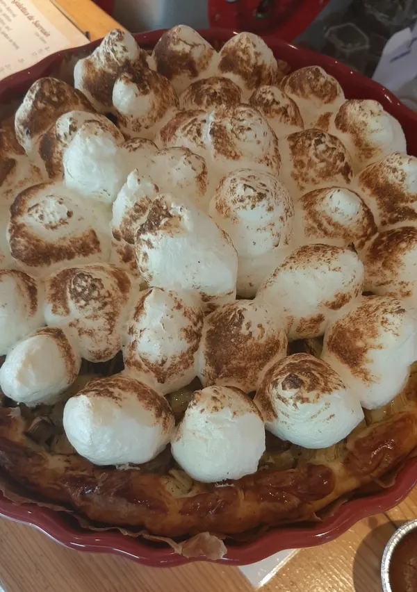
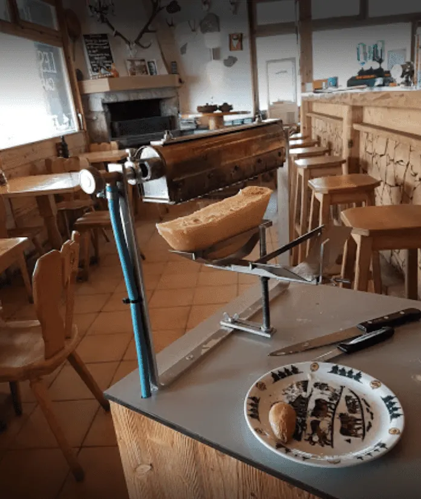

Au bord des pistes
HiverAprès le ski, on vient se réchauffer à l’intérieur, dans un chaleureux décor de chalet.

Les Bergers chez Benzine
Au départ des randonnées
Spécialités valaisannes · Siviez (Nendaz)
De la cuisine traditionnelle à 1730 mètres d’altitude : au pied des pistes l’hiver, au départ des randonnées l’été.
Ouvert tous les jours, 8h00 – 23h00 · Route de Siviez 27
Depuis plus de 40 ans
Un lieu où les gens du pays rencontrent les touristes dans la bonne humeur.
Restaurant historique, l’un des premiers lieux de restauration de Siviez, les Bergers réunissent depuis plus de quarante ans les locaux et les gens de passage autour des spécialités de la région.
Depuis 2015, Madame Sandra a repris la maison et la fait vivre dans une ambiance chaleureuse et conviviale : une cuisine valaisanne, familiale, dans un décor de chalet.
Été comme hiver

Après le ski, on vient se réchauffer à l’intérieur, dans un chaleureux décor de chalet.

Le sentier des bisses part d’ici. Au retour de randonnée, la grande terrasse vous attend.
Nos spécialités
Une cuisine faite maison, préparée selon les saisons et pour toute la famille, à base de fromages et de viandes de la région.

Raclette à discrétion
Fondue aux trois fromages
Fromages de la Laiterie de Haute-Nendaz. Nature, à la tomate ou aux bolets.
Croûte au fromage
Nature ou complète.
Planchette valaisanne
Petite ou grande.
Salade des alpages
Salade verte, viande séchée, champignons frais, fromage.
Burger valaisan
Pur bœuf, viande séchée, fromage à raclette, oignons caramélisés.
Entrecôte Café de Paris
Pizzas & burgers maison
Crêpes maison
Sucrées, en dessert ou au goûter.
La chasse
Une fois l’automne arrivé.
À table




Croûtes au fromage, planchettes, burgers maison, fondues, pizzas, raclettes… il y en a pour tous les goûts.
Privatiser le restaurant
Entreprise, amis ou famille : le restaurant se privatise, avec un menu composé pour vos convives.
Nous trouver
